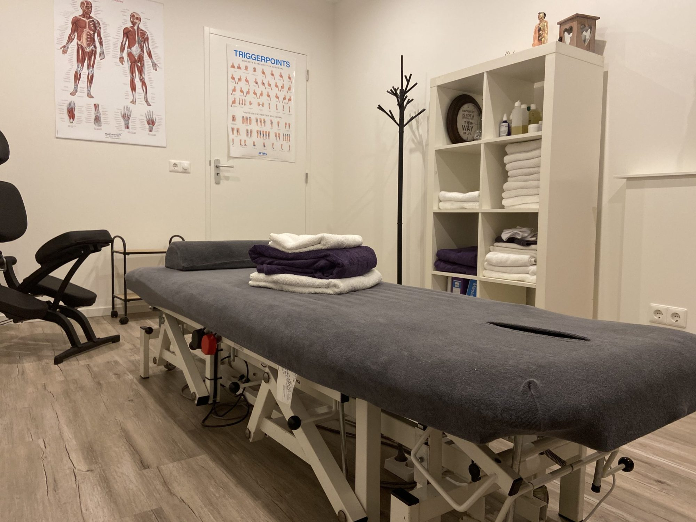
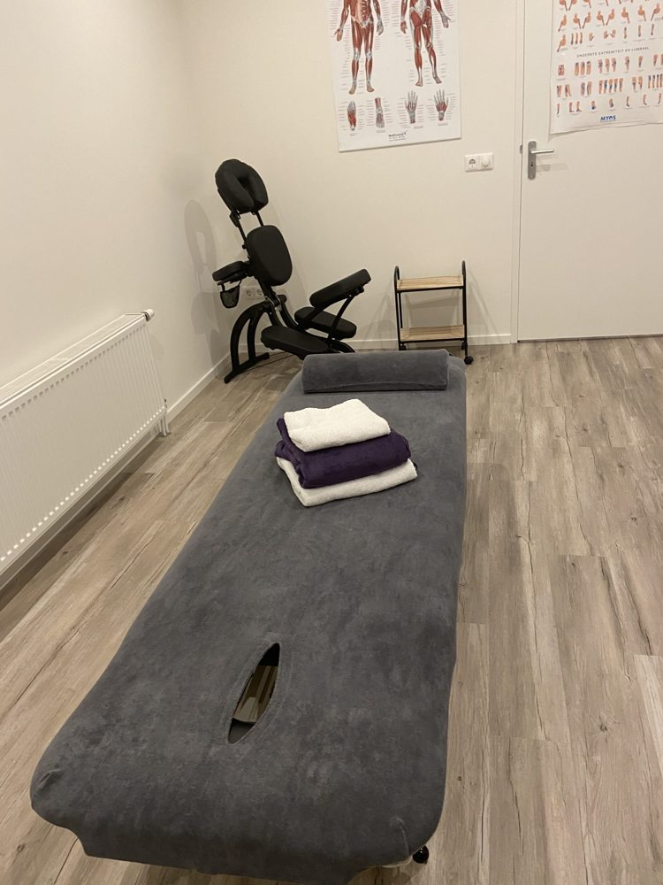
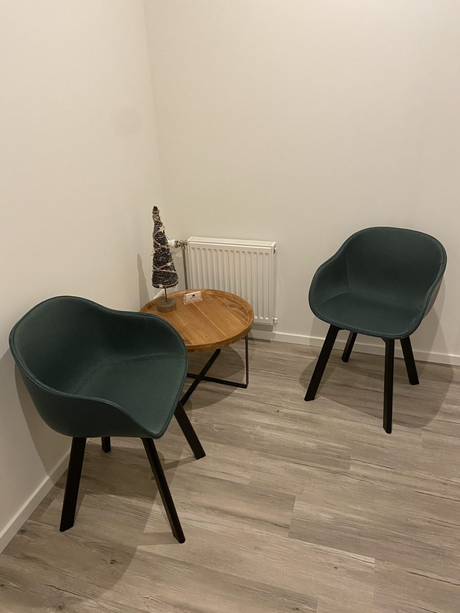
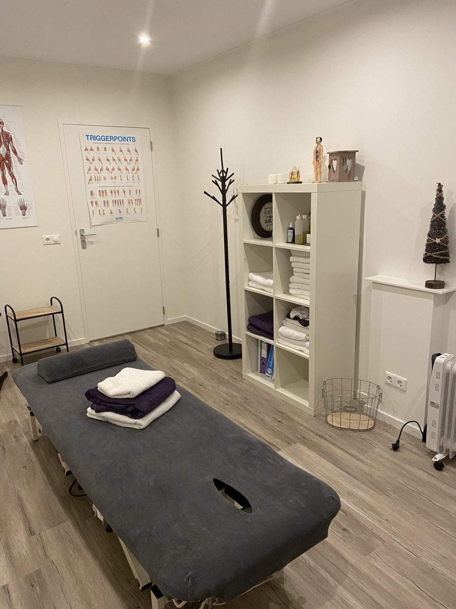

Klassieke massage
Ontspanningsmassage, om even helemaal tot rust te komen.


Massagetherapie in Tholen bij klachten in nek, schouders en rug, hoofdpijn of stress. Van een ontspanningsmassage tot borstweefseltherapie, afgestemd op jouw klachten.
Veel klachten komen voort uit je spieren. Loop je langere tijd met spanning rond, dan gaat dat op je spieren zitten en zit je vaak 'vast'.
Mijn doel is om mensen lekker in hun vel te laten zitten en ze daar een handje bij te helpen.
Je kunt bij mij terecht voor de volgende massages. Welke past bij jouw klachten, bespreken we samen.
Ontspanningsmassage, om even helemaal tot rust te komen.
Gericht op de pijnlijke 'knopen' in je spieren.
Langzaam en diep in de spieren, bij vastzittende spanning.
Een massage van het bindweefsel onder de huid.
Zittend op de massagestoel, gericht op rug, nek en schouders.
Voor vrouwen met borstklachten. Lees meer
Heb je ergens specifiek last van? Dan richt de massage zich op die plek.

Ik heb de opleiding borstweefseltherapie met succes afgerond. Zo kan ik naast massages ook vrouwen met borstklachten behandelen.
Het tarief hangt af van de tijd die nodig is. Samen bespreken we vooraf welke tijd gewenst is.
| 30 minuten | € 35 |
| 45 minuten | € 50 |
| 60 minuten | € 60 |
Dezelfde tarieven voor elke massage.

"Het menselijk lichaam is een prachtig iets. Je raakt gewoon nooit uitgeleerd."
Mijn naam is Bianca Straver. Een aantal jaren geleden ben ik flink ziek geweest. In die tijd ging ik regelmatig naar mijn masseur, en stapje voor stapje ging het beter met mijn lichaam.
Op een dag wist ik het: ik ging massagetherapeute worden. Wat mijn masseur voor mij deed, wilde ik ook voor anderen doen. Inmiddels heb ik vele opleidingen afgerond en heb ik mijn eigen praktijk in Tholen.
Heb je vragen of wil je een afspraak maken? Bel of stuur een appje, dan plannen we samen een moment.
Ben ik met een behandeling bezig, dan kan ik niet altijd opnemen. Spreek dan de voicemail in of stuur een appje, dan neem ik zo snel mogelijk contact met je op.
| Maandag | Op afspraak |
| Dinsdag | Op afspraak |
| Woensdag | Op afspraak |
| Vrijdag | Op afspraak |
De praktijk is aan de Slikkenburg 2 in Tholen.